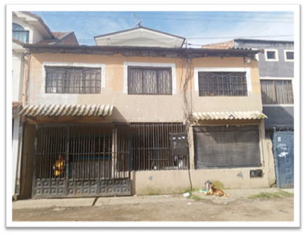
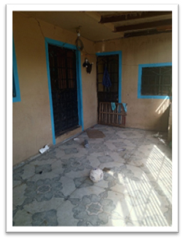
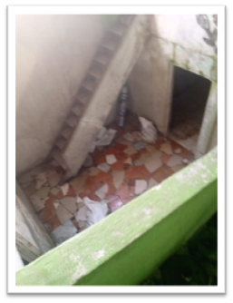
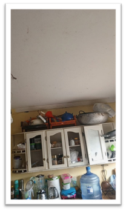
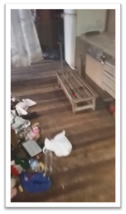

← volver al mapa
Casa - EC-RJ-154635
EC-RJ-154635 · casa · CUENCA, Azuay
★ Oferta destacada





Datos del remate
| Avalúo pericial | $76,908 |
| Tipo de bien | casa |
| Área de construcción | 267.00 m² |
| Área de terreno | 132.10 m² |
| Cantón / Provincia | CUENCA, Azuay |
| Dirección / Sector | MACHANGARA |
| Señalamiento | Tercer Señalamiento |
| Fecha de remate | 2026-09-01 |
| No. de proceso | 01333202200171 |
Análisis vs. mercado
| Avalúo por m² | $288/m² |
| Mediana de mercado en la zona | $668/m² |
| Descuento vs. mercado | 56.9% |
| Comparables usados | 14 |
| Radio de búsqueda | 2000 m |
| Puntaje | 92/100 |
Descripción completa del avalúo
terreno más una casa de habitación registrado a nombre de roberta del rocio contreras siguenza la propiedad que tiene un área de terreno de 132,1 m², este inmueble está bien singularizado con topografía negativa ( escarpado hacia abajo) desde la calle publica y forma rectangular, cuenta con ingreso por la calle lastrada andrés rodríguez además cuenta con todos los servicios básicos como: agua potable, alcantarillado, energía eléctrica, trasporte público, recolección de basura, con clave catastral 14-09-019-006-000además, cuenta con una vivienda con tipología adosada de dos pisos más buhardilla y un sótano con un área de construcción de 267 m² en estado de conservación regular
Análisis de inversión (IA)
★ Buena oportunidadEl descuento del 56.9% sobre la mediana de mercado, calculado con 14 comparables, es significativo y justifica investigar más a fondo. La propiedad tiene servicios básicos completos y una construcción de 267 m² sobre un terreno de 132 m², lo que implica buena densidad edificada. Sin embargo, hay elementos físicos y legales que deben verificarse antes de comprometer dinero.
A favor:
- Descuento del 56.9% sobre mediana de mercado respaldado por 14 comparables, muestra estadística razonable para Cuenca
- Área de construcción de 267 m² significativamente mayor al área de terreno (132 m²), indica aprovechamiento vertical alto (2 pisos + buhardilla + sótano)
- Cuenta con todos los servicios básicos: agua potable, alcantarillado, energía eléctrica, transporte público y recolección de basura
- Bien singularizado con clave catastral clara (14-09-019-006-000), lo que facilita la verificación registral
- Forma rectangular del terreno, favorable para uso y eventual remodelación
- Ubicación en Cuenca, mercado inmobiliario con demanda establecida y relativa liquidez
En contra:
- Topografía negativa (escarpado hacia abajo desde la calle pública) puede encarecer remodelaciones, ampliaciones o trabajos estructurales
- Acceso por calle lastrada (no pavimentada), lo que puede afectar valorización futura y comodidad de uso
- Estado de conservación calificado como 'regular', lo que implica posibles costos de reparación no cuantificados en el avalúo
- Tipología adosada limita intervenciones en fachadas laterales y puede generar conflictos con colindantes
Riesgos a verificar:
- Al ser remate judicial, verificar si existen gravámenes, hipotecas o embargos adicionales inscritos en el Registro de la Propiedad de Cuenca que no se cancelan automáticamente con el remate
- Confirmar si la propiedad está ocupada (por la propietaria registrada u ocupantes de hecho), ya que el proceso de desahucio o lanzamiento puede ser costoso y lento en Ecuador
- El estado de conservación 'regular' en una edificación con sótano y buhardilla puede esconder problemas estructurales, de humedad o filtraciones que requieren inspección técnica presencial urgente antes de ofertar
- La topografía escarpada hacia abajo eleva el riesgo de problemas de drenaje, humedad en sótano y potencial inestabilidad de talud; se recomienda revisión geotécnica básica
- Verificar que las 267 m² de construcción estén debidamente declaradas y regularizadas en el municipio de Cuenca; construcciones en buhardilla y sótano frecuentemente no figuran en el catastro oficial
- Confirmar que el avalúo pericial de $76,908.40 es reciente y refleja el estado actual del bien, no una valoración desactualizada
Generado por IA a partir de la descripción — no es asesoría legal ni financiera.
Esta ficha es una copia de lo publicado en el sitio oficial de remates
judiciales de la Función Judicial del Ecuador, para consulta — no
reemplaza el expediente judicial. remates.funcionjudicial.gob.ec no da
un link propio por remate, por eso se generó esta página aparte.
Antes de ofertar, el expediente debe revisarlo un abogado.